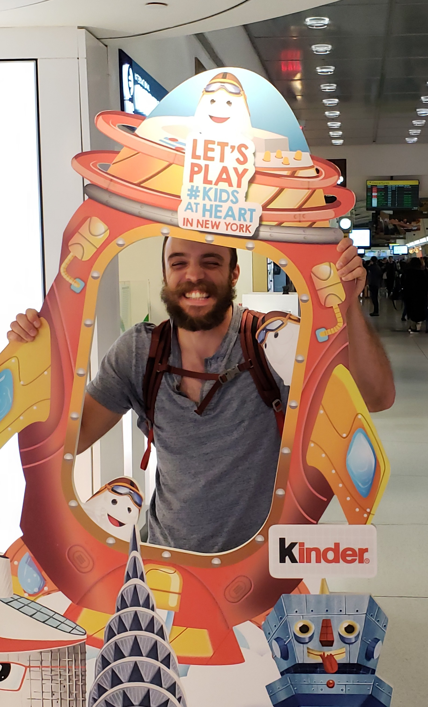
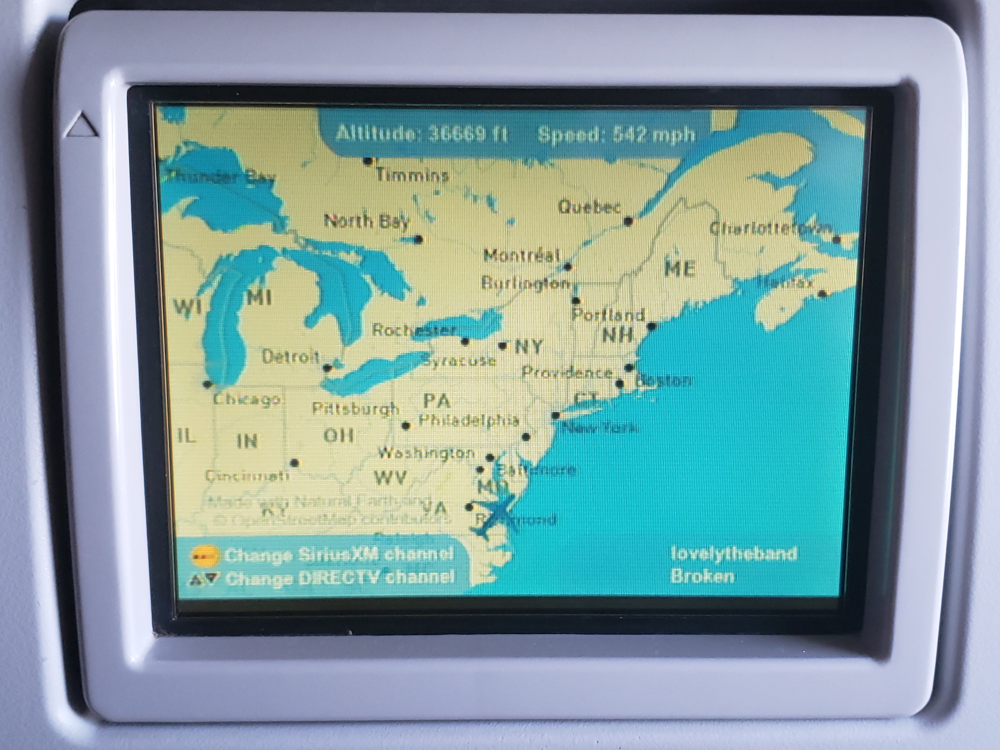
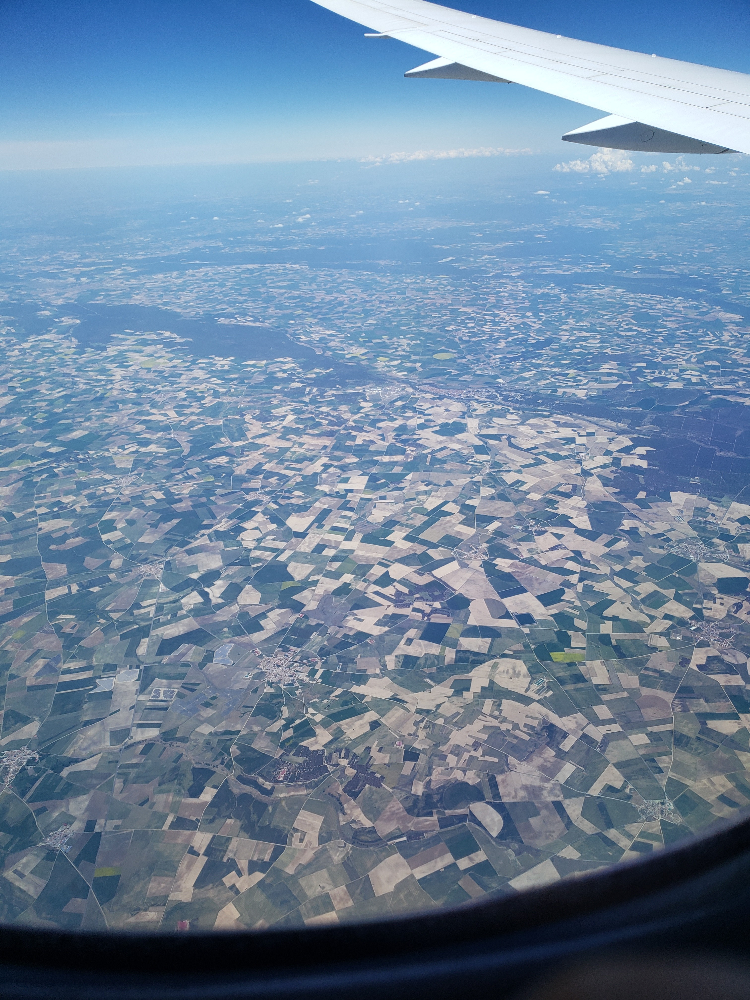
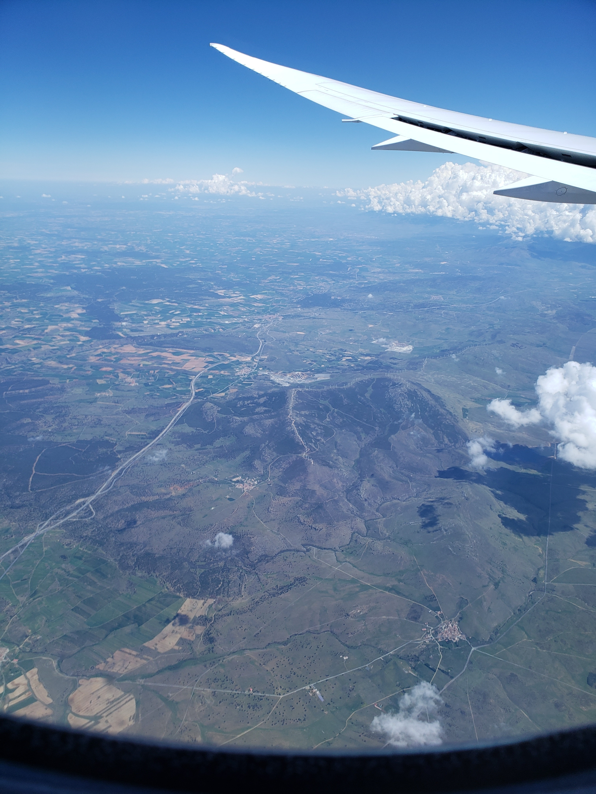
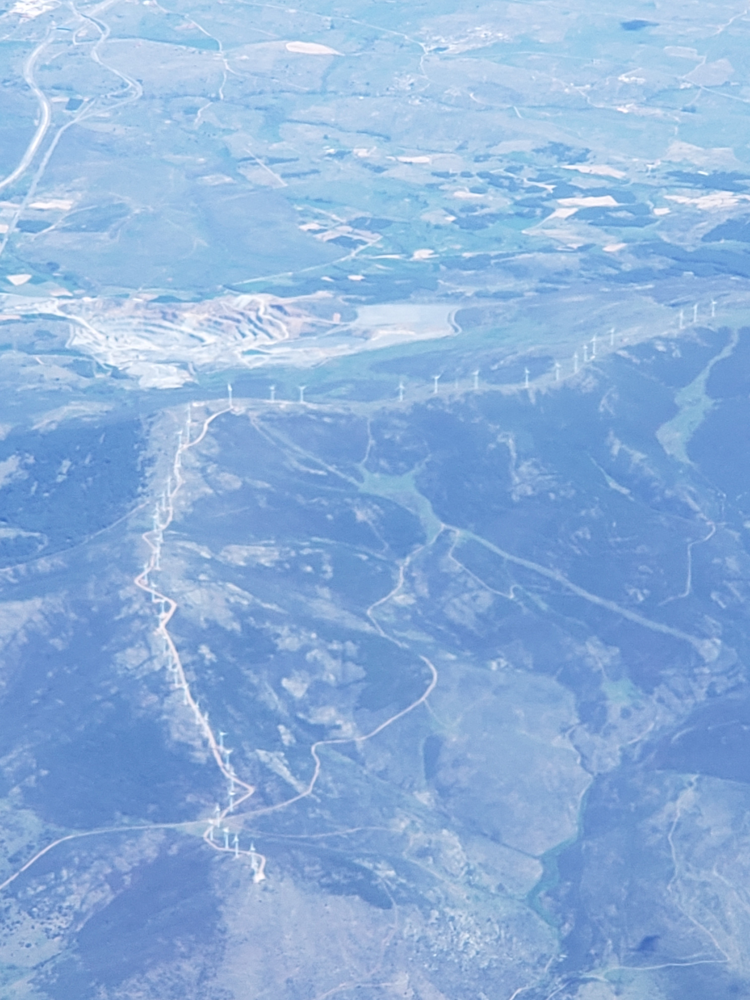
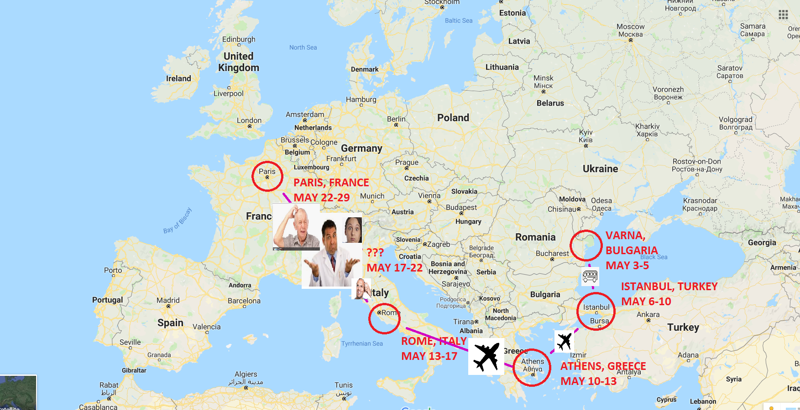

"THIS GUY TOLD ME TO CHECK OUT HIS MOUSTACHE ENTHUSIAST BLOG THEN NEVER UPDATED IT"
-you, probably
Thursday, May 2nd, 2019, 7:30PM

I'm currently in Madrid's Madrid-Barajas airport, waiting for our third of four flights to board. It's been an adventure so far. The flight from Atlanta to NYC's JFK airport had me surrounded by screaming and kicking children for two hours, while the flight from JFK to Madrid was delayed an hour and its gate changed repeatedly. When the third (and final) gate change was announced, the crowd let out a collective sigh and chuckle, everyone simultaneously acknowledging the ridiculousness of the situation.
The flights have been cool otherwise. The headrest on the flight from Atlanta to JFK showed the plane's speed, altitude, and location. The flight to Madrid had this as well. This is new to me. Maybe it's standard?

The flight to Madrid was overnight. It was a nice chance to get some shut-eye. I was lucky enough to get a window seat on the left side of the plane and got some pretty cool photos coming into Madrid.    (Those are wind turbines lining a mountain ridge).
Andrew wanted me to mention that somebody called me a moustache with legs.
Andrew. It was Andrew. Andrew called me a moustache with legs.
Also, I may not have mentioned, I'm traveling with my friend Andrew from Ohio through Rome. He's neat! We're in Sophia now. Customs took roughly 30 seconds. The agent asked me what I was doing in Bulgaria. I told him I was going to Varna. He acted kind of surprised (???) and let me go on my way. Just like Ecuador, no one checked my bag. Safety!
It's 3:30 in the AM here, May 3rd. I've been sleeping here and there since 7AM on May 1st. I think I've slept about 6 or 7 hours total, frequently interupted as it normally is on planes. We're planning on staying up through this evening. We can't check into our AirBNB until 2PM, so it's not like we have any place to sleep, and there is this awesome vacation/new place/travel energy/excitement that is going to be driving us when we land in Varna and spend some time someplace foreign that's not just another airport.
I'd like to update the CSS for this blog more later. For now, I dig the simplistic look. I shrank the width of everything so text is easier to read and photos aren't all over the place. I'll add a lot more photos next time. And more content. There just isn't a lot to update about when all you're doing is hanging around airports, ya dig?
Thanks for reading!
Wow, what a neat travel blog
Hello reader,
Thanks for taking the time to visit my travel site.
This was hastily made while learning how to use Github Pages, how to purchase domain names, what apex and subdomains are, and how to configure your Google-purchased domain so it forwards to your Github pages URL.
Below you can find a detailed map of where I'll be, when I'll be there, and how I'm getting there. This map was made using the well known map making software Microsoft Paint.
